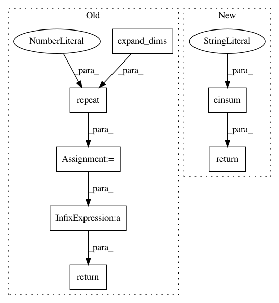

c8e7a4ff3fb3fbc14476876b6087a68c6d56ab45,geomstats/geometry/poincare_ball.py,PoincareBallMetric,retraction,#PoincareBallMetric#Any#Any#,264
Before Change
base_point = gs.to_ndarray(base_point, to_ndim=2)
retraction_factor = ((1 - (base_point**2).sum(axis=-1))**2) / 4
retraction_factor =\
gs.repeat(gs.expand_dims(retraction_factor, -1),
base_point.shape[1],
axis=1)
return base_point - retraction_factor * tangent_vec
def inner_product_matrix(self, base_point=None):
Compute the inner product matrixx.
After Change
retraction_factor =\
((1 - gs.sum(base_point**2, axis=-1, keepdims=True))**2) / 4
return base_point\
- gs.einsum("...i,...j->...j", retraction_factor, tangent_vec)
def inner_product_matrix(self, base_point=None):
Compute the inner product matrix.
In pattern: SUPERPATTERN
Frequency: 4
Non-data size: 7
Instances
Project Name: geomstats/geomstats
Commit Name: c8e7a4ff3fb3fbc14476876b6087a68c6d56ab45
Time: 2020-04-09
Author: gerald@pop-os.localdomain
File Name: geomstats/geometry/poincare_ball.py
Class Name: PoincareBallMetric
Method Name: retraction
Project Name: geomstats/geomstats
Commit Name: c8e7a4ff3fb3fbc14476876b6087a68c6d56ab45
Time: 2020-04-09
Author: gerald@pop-os.localdomain
File Name: geomstats/geometry/poincare_ball.py
Class Name: PoincareBallMetric
Method Name: inner_product_matrix
Project Name: geomstats/geomstats
Commit Name: 656e5e7d6b75cf0a7fad757a7ca59174c66e85f0
Time: 2020-04-09
Author: gerald@pop-os.localdomain
File Name: geomstats/geometry/poincare_ball.py
Class Name: PoincareBallMetric
Method Name: retraction
Project Name: geomstats/geomstats
Commit Name: 656e5e7d6b75cf0a7fad757a7ca59174c66e85f0
Time: 2020-04-09
Author: gerald@pop-os.localdomain
File Name: geomstats/geometry/poincare_ball.py
Class Name: PoincareBallMetric
Method Name: inner_product_matrix